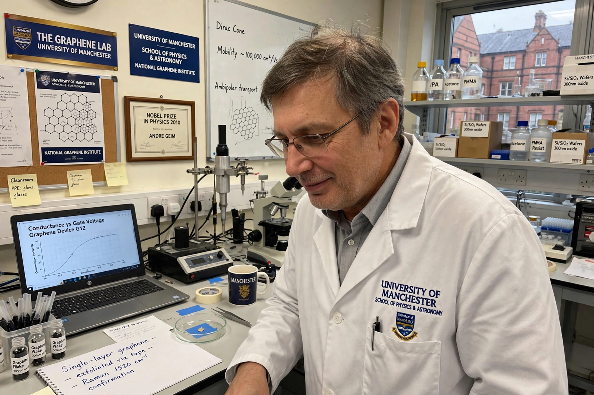

Andre Geim

Sir Andre Konstantin Geim (born 21 October 1958) is a Russian-born Dutch–British physicist working in England at the University of Manchester. He is best known for his work on graphene, carried out with Konstantin Novoselov, for which the two shared the Nobel Prize in Physics in 2010 "for groundbreaking experiments regarding the two-dimensional material graphene". Geim is also notable as the only person to have received both a Nobel Prize and an Ig Nobel Prize, the latter for levitating a frog using diamagnetism.
| Born | 21 October 1958, Sochi, Russian SFSR, Soviet Union |
|---|---|
| Institutions | University of Manchester |
| Known for | Isolation and study of graphene; diamagnetic levitation |
| Awards | Nobel Prize in Physics (2010); Ig Nobel Prize (2000); knighthood (2012) |
Early life and career
Geim was born in Sochi to parents of German descent and studied at the Moscow Institute of Physics and Technology, receiving his PhD in 1987 from the Institute of Solid State Physics in Chernogolovka. After postdoctoral work in the United Kingdom and Denmark, he became a professor at Radboud University Nijmegen in the Netherlands, where he performed the famous experiment levitating a live frog in a strong magnetic field — a demonstration of diamagnetism that earned him and Michael Berry the 2000 Ig Nobel Prize. In 2001 he moved to the University of Manchester.
Graphene
At Manchester, Geim's group pursued "Friday night experiments" — exploratory side projects — one of which led in 2004 to the isolation of graphene: single layers of carbon peeled from graphite using adhesive tape (the "Scotch tape method"). The resulting 2004 papers with Novoselov showed that graphene's electrons behave like massless relativistic particles, launching the field of two-dimensional materials. Geim was elected a Fellow of the Royal Society in 2007 and was knighted in the 2012 New Year Honours. His other work includes the development of "gecko tape", a biomimetic adhesive inspired by gecko feet.